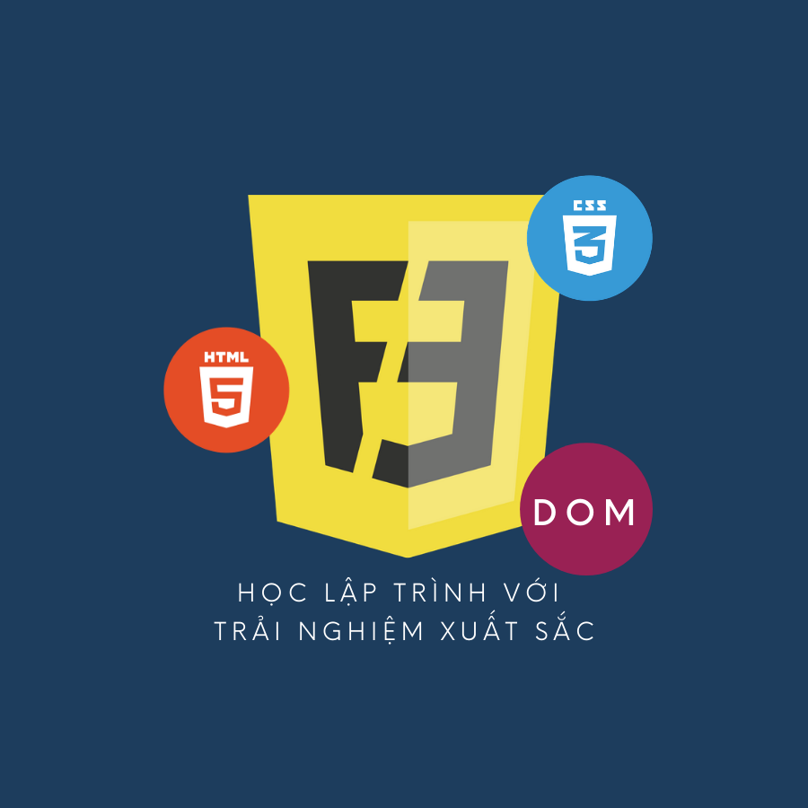

Khóa học Docker & Jenkin
Khóa học hướng tới những học viên đam mê và mong muốn theo đuổi vị trí Devop. Đây cũng là một kỹ năng quan trọng khi định hướng phát triễn theo lộ trình fullstck developer. Nắm được kỹ năng này, học viên sẽ tự tin để trở thành 1 devops engineer thật sự.
More...
Khóa học NodeJS
Nắm vững khóa học này, bạn sẽ tự tin apply bất cứ vị trí nào về back-end. Một công nghệ mới mở ra thăng hoa trong nghề lập trình viên back-end.
More...

Khóa học Front-End
Lộ trình F1 giúp bạn từ một người chưa biết gì về lập trình trở thành một người có nền tằng lập trình vững chắc và chuyên sâu Font-end, trở thành một Font-end engineer hay Font-end Developer chuyên nghiệp.
More...
Khóa học Javascript
Lộ trình học nền tảng lập trình từ CĂN BẢN đến NÂNG CAO dành cho học viên có mục tiêu theo đuổi đam mê với nghề kỹ sư phần mền.
More...